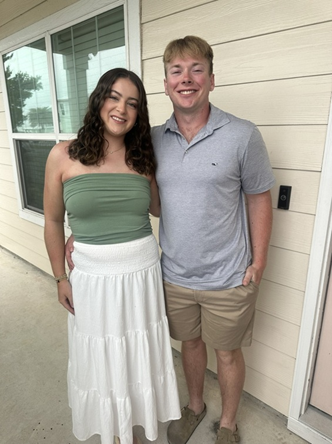

About Me
Hi, my name is Brooks Naugher. I am a junior at Jacksonville State University and am majoring in Computer Science. I love solving complex problems with programming. My most relevent project at the moment is a time-keeping API that my team created in a software engineering class. We implemented Java Data Access Objects data from a MySQL database that contained real data from a previous job from my professor had in the past. We used this data for features to do various calculations, see what employees were absent, and much more (see more on my GitHub @ team project repository). This project also gave me experience with open-source libraries like JUnit and JSON-Simple to help with encoding HashMaps and ArrayLists to JSON string and unit testing for features. This project also let experience the Scrum process through working with a team developers and taking on the role as "Scrum Master" for one sprint. I am currently working at Lowe's as a part-time garden center sales associate. I enjoy helping customers, keeping my department tidy, and keeping my department safe, and making sales. Some of my hobbies outside of class include fishing, hunting, golf, playing video games, and working out. These hobbies help me experience the beauty of nature, can challenge my brain, keep myself diciplined, and can be great ways to relax outside of work and school. I hope to create more projects to add to this site at a future date. Thank you for reading!
